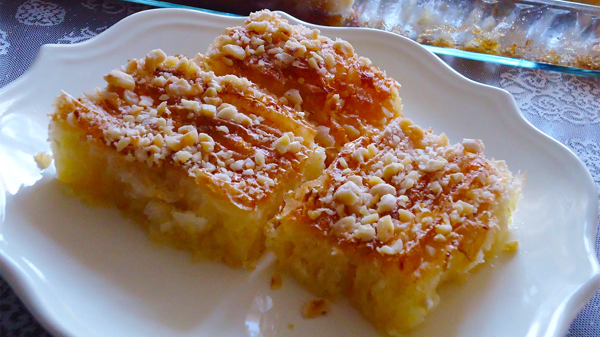

ËMBËLSIRA PAÇAVURE

Përbërësit:
- 1 pako me peta ëmbësirash të gatshëm
- 6 kokrra vezë
- 1 filxhan çaji me arra të thërrmuara
- 1 filxhan çaji me vaj ulliri
- Pak gjalpë i freskët
- 1 filxhan çaji me kos
- 1 filxhan çaji me sheqer
- 1 lugë kafeje me sodë buke
- 2 pako krem karamel
- 800-1 kg sheqer (Për sherbetin)
- 1 l ujë (Për sherbetin)
Përgatitja:
Petat e ëmbëlsirës i mbledhim rrëmujshëm dhe të rrudhosura i vendosim në një tepsi të lyer me pak gjalpë dhe i vendosim të piqen në furrë.
I lëmë në furrë për pak minuta derisa fillojnë të thahen. Ju udhëzoj që në një tas të hidhni vezët, sheqerin, vajin e ullirit, kosin, sodën e bukës dhe krem karamelin.
Përziejini mirë të gjitha bashkë dhe më pas të gjithë masën hidheni mbi petët e thara në furrë. Sipër spërkatini me arrat e thërrmuara dhe futeni të piqet përreth
20-25 minuta. Ndërkohë, përgatisni sherbetin duke zierë sheqerin me ujin derisa të jetë gati në formën e shurupit pak të trashë. Pasi ta hiqni ëmbëlsirën nga furra
lëreni të ftohet dhe sherbetin hidhjani sipër të nxehtë. Priteni në forma katrore apo rombi dhe Paçavurja është gati për t’u servirur.